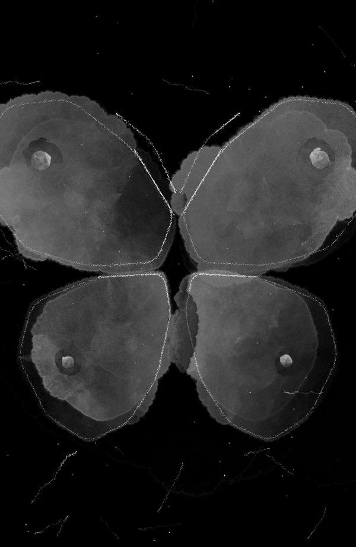
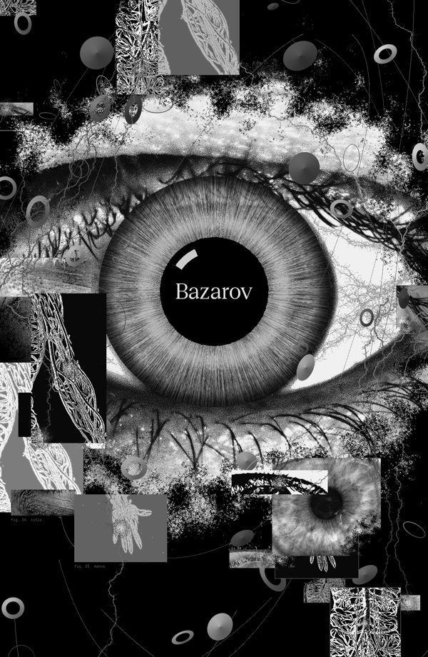
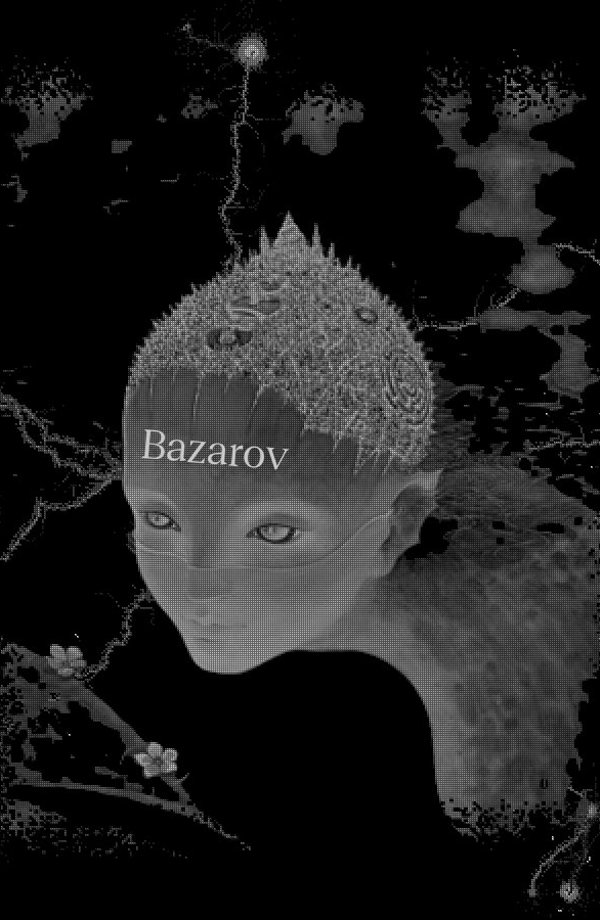

← Trylen
Things I made because I wanted to
01 · Lite 6 lab deck
Arm control
Code ↳
Blurb coming.

02 · p5.brush
Paint with code
Gallery ↳
Blurb coming.
03 · Mortimer
Papyrus
Code ↳
Blurb coming.
04 · the cat
Email Scraper
Code ↳
Blurb coming.
05 · account marks
The little guys
More ↳
Blurb coming.

06 · Bazarov
The eye
Open ↳
Blurb coming.

07 · the secret one
The mermaid
Watch ↳
Blurb coming.